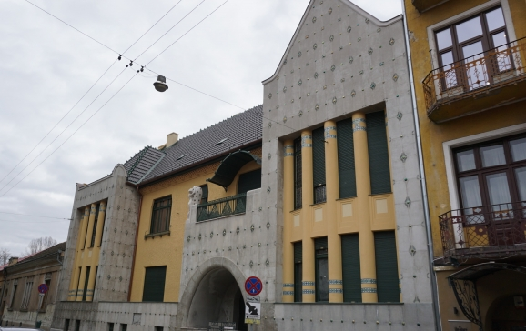
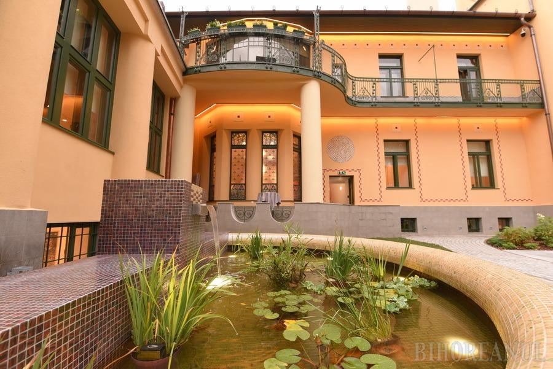
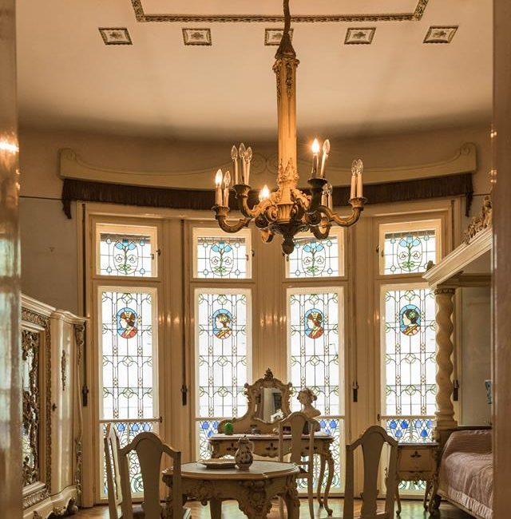

Casa Darvas - La Roche
| Casa Darvas-La Roche este o clădire din Oradea, pe strada Iosif Vulcan la nr.11, proiectată de frații Vágó József și Vágó László, datând de la începutul secolului al XX-lea. |
| Clădirea |
| Clădirea este construită în stil Secession vienez cu forme simplificate, geometrice. Planul clădirii este în formă de L, având fațada principală spre strada Iosif Vulcan și pe cea secundară spre Criș. Fațada principală are trei zone diferit abordate arhitectural. Întreaga fațadă este placată cu marmoră la intersecția plăcilor aflându-se butoni semisferici din cărămidă smălțuită aparținand fabricii Zsolnay/Pecs. Fațada secundară este mai simplă, terasele coborând în trepte până în stradă. |
| Curtea interioară are ca element distinctiv gardul cu stâlpi din lemn încrustat. Clădirea este foarte importantă pentru istoria arhitecturii și artei, fiind reprezentativă pentru dezvoltarea stilului Secession în România. Acest lucru a dus la clasarea ca monument istoric a acestei frumoase clădiri, cod LMI BH-II-m-B-01090. |

| Istoric |
| Casa a fost construită de afaceristul evreu Darvas Imre și de asociatul său elvețian, Alfred La Roche. În anii 30, casa a fost vândută familiei evreiești Simon. Numeroși membri ai acestei familii au fost deportați și uciși în timpul Holocaustului. O placă de marmură, plasată la intrare, păstrează memoria victimelor[1]. În anii comunismului, mare parte a clădirii a fost naționalizată de autorități. Trei încăperi au rămas supraviețuitorilor familiei proprietarului. Partea naționalizată a fost preschimbată în centru sportiv, apoi în sediu al echipei de fotbal FC Bihor. Potrivit experților, în această perioadă s-au produs numeroase modificări și distrugeri ale structurii și ornamentelor[2]. În anii 2010, echipa FC Bihor a fost evacuată din clădire, iar administrația locală a achiziționat spațiile private, devenind proprietar unic al întregii clădiri.
|
| Muzeu |
| Casa Darvas La Roche a fost declarată clădire protejată și transformată în muzeu al stilului Secession/Art Nouveau la Oradea[3]. Spațiile de la parter sunt destinate expozițiilor temporare, iar din cele două apartemente de la etaj, unul găzduiește colecția muzeului, iar în celălalt se află expuse obiectele personale ale familiei Simon. În prezent, instituția e dedicată strângerii de fonduri pentru reabilitarea clădirii[4]. Lucrările de restaurare vor demara la sfârșitul anului 2017. |


Realizat de Vlad Luncan - 2022